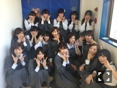

| 2015/03 29 Sun | 斎藤ちはる 怒涛の質問返し。ラ スト！(´>∀<｀)ゝ |
ちはるーむへようこそ(﹡ˆ ˆ﹡)
今日は富士急にて、乃木のの公開収録でした(﹡ˆ ˆ﹡)
わざわざ来てくださった皆さん、
たまたまいらしてた皆さん、
見てくださってありがとうございました\( ˆoˆ )/
ブルーシアター並みにお客さんとの距離が近くて、一体感がありました！
富士急という開放的な場所でこうして公開収録やミニライブができてすごい楽しかったです！
個人的には、もっとMC力をアップしていきたいなと改めて感じました。
ライブでは、
あの日、僕は咄嗟に嘘をついた(万理華ポジ)
制服のマネキン(まいやんポジ)
君は僕と会わないほうがよかったのかな(自分ポジ)
ガールズルール(一実ポジ)
おいでシャンプー(まいやんポジ)
披露させていただきました！！！
いまからアンダーライブが楽しみです\( ˆ ˆ )/♡

富士急、あったかかったなあ♡
終わった後、汗だくでした。笑
今回のブログは、
ずっと前に皆さんから募集した質問に最後まで答えようと思います。
待っていた方、すみません。お待たせしました。(> <)
今までずっと返せてなくて、それがずっと続いて、うやむやのまま質問返しが終わるのが自分的にやるせなくて。。
時期的にもすごいずれてて申し訳ないんですが
私の自己満なのでさらっと読み流してください。
質問募集！の次のブログが更新されるまでの期間までの質問に答えたので、返せなかった方もたくさんいます。すみません(> <)。
目、チカチカなったらすみません(°_°)
全部読むの大変なの分かってるのでさらっと！さらっとで大丈夫です！
怒涛の質問返し！
451〜ラストまで！
No.451
乃木坂の曲で好きな曲おしえて
乃木坂の曲で好きな曲おしえて
狼に口笛を♡
No.452
十一枚目シングルでも選抜メンバー入り出来る為に、十枚目シング
ルでどの様に頑張りたいと思う？
必死に頑張ったつもりです。
No.453
一番好きな歌は何ですか？
No.454
ちはるちゃんは、今、幸せですか？
幸せじゃないな〜って思ったことは
今までの人生で、ないです。
No.455
ちはるさんの肌がすごく綺麗なので美容法など色々教えてくださいฅ'ω'ฅ
美容法とかは特にないよー！笑
最近お風呂で目にタオルを当てるのがマイブーム。えへ
No.456
嘗てネパール、ブータンと共にヒマラヤ三国と言われていた インドに併合されてしまった旧シッキム王国へ行ってみたい と思いますか？
嘗てネパール、ブータンと共にヒマラヤ三国と言われていた インドに併合されてしまった旧シッキム王国へ行ってみたい と思いますか？
ちょっと難しくてわかんないですごめんね(> <)
No.457
Q
今、古代文明系でどんな本、読んでる?
本読めてないなー(> <)
斎藤家の歌、新曲考えてる?
斎藤家の歌、新曲考えてる?
まだ考え中です。気長にね。
もし、全ツですっ転んだ時(あり得んかも知れないけど)ちはるさんならどう対処する？
もし、全ツですっ転んだ時(あり得んかも知れないけど)ちはるさんならどう対処する？
痛そうな顔見せない！！
小さい頃からそう！
全部我慢しちゃってる！
No.458
最近ハマってる食べ物はなんですか？
最近ハマってる食べ物はなんですか？
最近じゃないけど、マヌカハニー♡
No.459
ちはるちゃんは城は好きかな？
日本にある四つの国宝の城(犬山城、姫路城、松本城、彦根城)へ
行った事はあるのかな？
ちはるちゃんは城は好きかな？
日本にある四つの国宝の城(犬山城、姫路城、松本城、彦根城)へ
行った事はあるのかな？
姫路城はあるよ！登った！
神秘を感じるね(﹡ˆ ˆ﹡)
No.460
ちはるちゃんの趣味は何ですか？
ちはるちゃんの趣味は何ですか？
映画鑑賞(｢･ω･)｢
No.461
好きな映画はー？
BACK TO THE FUTURE
No.462
乃木坂46で1番の推しメンは？(((o(*ﾟ▽ﾟ*)o)))
ななみん♡まいまい♡
No.463
るんるんちゃんがアイドルとして心がけている事は何ですか？
弱音を吐かない。
No.464
ちはるちゃんの夏風邪対策は何ですか？
何事も楽しんだら風邪なんかなりません！
そしていっぱい寝ます。
No.465
るんるんのストレス解消方法は何かな？
歌うこと！お風呂で思いっきり！！
No.466
ちはるちゃんの得意料理は何かな？
完璧なのは玉子焼き♡
No.467
女子力と言ったら、「容姿端麗」「笑顔の美しさ」「料理の腕前」 「きめ細かい心配り」「声の美しさ」「会話能力」「頭の聡明さ」 の七項目が挙げられるね！
ちはるちゃんが頑張りたい女子力は、この中のどれかな？
会話堪能。切実。
初対面すこし緊張します。
No.468
るんるんちゃんは裁縫は得意かな？
できるっちゃーできます！
No.469
ライブ中とかに名前を呼ぶとき
ちーちゃん？ちはるん？
どんな呼び方が良いですか？
ライブとかはちはるんの方がいいのかなー？
ちーちゃんだと、きいちゃんと混ざってたまに間違えちゃう(> <)笑
普段はちーちゃんがいい！！
No.470
ショートヘアにはしないの？
ショートヘアはもうしない。
ツインテールももうしない。(するけど)
No.471
10th表題曲はどんな曲になりましたか？
思い出の大切な曲になりました。
No.472
万理華ちゃんの苔栽培
未央奈ちゃんの石採集
七瀬ちゃんの烏観察
小百合ちゃんの庭園巡り
花奈ちゃん、陽菜ちゃんのアイドルイベント観戦
日芽香ちゃんのリボン収集
等の様な個性的な、ちはるちゃんの趣味はあるのかな？
靴下集め。
No.473
「ちはる」という名前を漢字にするなら
どんな字を当てる？
千春！
書道の判子もこの字です。
No.474
UFOは信じますか？
そういうのすごい好きで信じます。
No.475
乃木坂の推しメンは誰ですか？
ななみん♡まいまい♡
No.476
『ここにいる理由』のひたすら食べ続けるMVでメンバーが食べるメニューは、メンバーで選べたんですか？
決められてたヽ(；；)丿
No.477
「この人はモテるだろうな」って思った女性の行動は？
上目遣いがナチュラルにうまい！
目がうるうる。
No.478
自分的に似合わなそうな髪型ありますか？
もう1個、次の個別でへたっぴういんくやってって言ったらやってくれますか？
ハーフツインテール！
全然いいよー♡
No.479
ちーちゃんはマニキュア塗ったりしますか？？どんな柄が好きー？？
マニキュア禁止なんだー(> <)
できるなら、シンプルなネイルがいいなー！
パールとかも可愛いそう！！
No.480
是非やってみたい単独の仕事は何ですか？
アメフトのお仕事がたくさんしたい！
雑誌のグラビアも！
もちろん女優のお仕事も！
No.481
ちはるって握手ではどういう話題なら好き？
あと無茶ぶりも行ける方？
なんでも楽しいよ(﹡ˆ ˆ﹡)
映画についてなら外さないけど！！
無茶ぶりは緊張する。。(｢･ω･)｢
No.483
乃木坂で好きな曲ベスト3は？
何度目の青空か？
狼に口笛を
君は僕と会わないほうがよかったのかな
No.485
・斎藤家に関する質問
Q.ちーちゃんがよく遊びに行くおばあさんは父方の？
両方よく行くよ(﹡ˆ ˆ﹡)
Q.ちーちゃんのいとこが勢ぞろいだと何人くらいになるの？
(お正月にも親戚40人が集まったくらいだから、すごい数ではないかと^^)
いとこは全員で7人！
・ちーちゃんの自己管理に関する質問 (^^)
Q.ちーちゃんの綺麗なお肌は何もしなくてもそんなに綺麗なの？
難しいスキンケアとかよくわからなくて(> <)
Q.ちーちゃんの綺麗な腹筋はお仕事(レッスン等)だけで維持されてる感じ？
(先月の「マリン」という生写真で腹筋が相変わらずだったので気になった)
腹筋はしてないんだけど、お腹に普段から力を入れるように心掛けてるから腹筋が落ちてないのかもしれない！メンバーによくプチ自慢しちゃう。
Q.じょーさんが9th個人PVで去年メンバーとサマーランド行ったそうだけど、
ちーちゃんも一緒に行ったの？
行ったよ〜♡
No.486
選抜入れて嬉しいですか？
すごく嬉しいです！でも嬉しいだけの感情とは限りません\( ˘-˘ )/
No.487
メールで手料理の写メが送られてきたことがあったけど、ちはるちゃんの得意料理(もしくは得意料理にしたい料理)は何ですか？
肉じゃがが個人的に大好きだから得意料理にしたいな〜♡
レシピを見ればなんでも作れるから
レシピなしで作りたい！
No.488
Ｑ.カラオケでの十八番は？！？！
No.488
Ｑ.カラオケでの十八番は？！？！
レベッカさんのフレンズ。
中3組はみんな歌います。
No.489
ちーちゃんが選抜に入って、斎藤家のみなさんの反応はどうだった！？！？！？
おばあちゃんも泣いて喜んでくれたよ。
No.489
ちーちゃんが選抜に入って、斎藤家のみなさんの反応はどうだった！？！？！？
おばあちゃんも泣いて喜んでくれたよ。
温かい家族。
No.491
無人島にもしメンバー１人と動物を連れていけるなら誰とどんな動物を連れて行きますか
No.491
無人島にもしメンバー１人と動物を連れていけるなら誰とどんな動物を連れて行きますか
まあや。
常に、無邪気に、ハッピーにしてくれるから♡
馬。
乗馬したい。
No.492
街でちはるん見かけるようなことがあったら話しかけるべき？
それともプライベートだし気を使った方がいい？
どちらでもいいよ(﹡ˆ ˆ﹡)
No.493
ちはるちゃんのストレス解消法は？
たくさん歌うこと！
No.494
最近乃木坂46好きになったばっかだし、学生で、お小遣いもすくないから、グッズとかあんまり買えないけど、精一杯応援するから、受け止めてくれる？
もちろん♡
その気持ちが十分嬉しい。
No.495 どうしたら常に素敵な笑顔でいられるのー？
嫌なことをすぐ忘れちゃうからかな！
No.499
ダンスの自主練習はどの様にしているの？
ＤＶＤやBlu-rayを観ながらやっているの？
家で鏡の前で！
携帯のムービーを見てやってるよ！
No.500
るんるんちゃんは早朝散歩はしているのかな？
してない(°_°)朝は苦手。
No.501
牛乳は好きかな？
好きでもなく嫌いでもなく！
No.502
るんるんの食は太いの、それとも細いの？
細くはないです。決して。
No.503
目標達成の為に手段を択ばない人をどの様に思う？
人に迷惑をかけないんだったらいいと思うけど、少しでも人に嫌だな、って思われるようなことをしているんだったらそれは違うと思う。
No.504
ちはるんが尊敬している人は?メンバーとメンバー以外で教えてほしいです♪
玲奈さん。ひなちま。まあや。両親。
No.505
ちはるちゃんから見て、色っぽいと思える女性の仕草は？
髪の毛をサイドにかける！
No.506
るんるんちゃんは、二期生に対して、二期生の成長を促す為にどの様な指導をしているの？
指導はしてないよ！
挨拶と言葉遣いはキチンとしてほしいとは思います(> <)
No.507
風邪対策は万全かな？
風邪はひかないよー！
No.508
マッサージとかこれ好きで食べてるーかあったら教えて♪
美の秘訣とは？
美の秘訣とは？
野菜が大好きだからたっくさん食べるよ♡
No.509
じゃあベタに男性に着てほしい服装は？？
細身のパンツ！
あと、ちはるんの変顔見たい！笑
いや、それじゃ他の人と被ってしまう。。。
気が向いたらね♡笑
でもこの質問にも答えてね？！笑
一緒にデートしませんか？？？？？
よし！これだ！笑
だめでーす！笑
No.510
ちはるちゃんの他の乃木坂46メンバーより長けている(たけている)と思う所は何処かな？
身長。
No.511
るんるんちゃんの嫌いな食いものは何かな？
とうもろこし一択。
でも食べなきゃいけない状況になったら食べますよ！
No.512
ちはるちゃんが今一番頑張っている事は何かな？
時間の使い方！
No.514
中３組が好きでいつか3人のユニットが見たいんだけど、ちはるんは中３組で何かやってみたい事はある？
たくさんありすぎる。。野望が。。
ユニットやりたいなあ\( ˆoˆ )/
3人でMVとか撮りたい！！
No.515
ちはるんが使ってて便利だよっていう
おすすめのアプリ教えてください！
おすすめのアプリ教えてください！
B612♡
No.516
暑い夏のお供は
「アイス派」
「かき氷派」
どちら派ですか？
そう言えばちーちゃんって
埼玉県出身だよね？
「ゆき熊」って知ってる？
「アイス派」
「かき氷派」
どちら派ですか？
そう言えばちーちゃんって
埼玉県出身だよね？
「ゆき熊」って知ってる？
アイス派！
わかんない(> <)
No.517
ちはるちゃんは、人間は好きかな？
人間観察、大好きです。
その人の年齢とか現状とかよく一人で想像しちゃいます。
No.518
チームDのメンバーに、ちーちゃんがアダ名をつけるとしたら？
かずみ ズミニー・リングイネ
あみ リバリー・ハンナ
川後 ゴン・リザ
まひろ ミラクル・パッチ
(知ってる人♡？笑)
No.519
初選抜の感想は⁉
たくさん経験することができて、成長できたんじゃないかな、と思います。
No.520
ちはるん、ひめたん、いくちゃんの中3組三人のツインテールが見たい！！！です！！！
いくちゃんの髪の毛が伸びたら！
そろそろ私はひめたんのツイン以外の髪型も見たいですが。
No.521
最近のお気に入りの曲は何ですか？
KANA-BOONさんのないものねだり
No.522
北国(北海道とか)と南国(沖縄とか)どっちが好き？
両方好きだな〜♡
夏に北国、冬に南国はどうかしら♡
No.523
サンリオのキャラクターの中で
どのキャラクターが１番好きですか？
どのキャラクターが１番好きですか？
こうみえてマイメロ推し。
No.524
"伊藤ちゃんず"に対抗して"さいとうちゃんず"を作る予定はないの？
もしかして、もう結成済みだったりする？
もしかして、もう結成済みだったりする？
サイトウさん ならあります。
さん は 3人の さん です。
No.525
世界遺産で行ってみたい場所はどこですか
マチュピチュ
No.526
いよいよ全国ツアーが始まるけど、ツアー中にちはるんがここに注目して欲しいとか意気込みが有れば教えて下さい!(b^ー°)
自分が行けるのは神宮だけなので、各会場の様子や感想も教えて下さい＼(^o^)／
自分が行けるのは神宮だけなので、各会場の様子や感想も教えて下さい＼(^o^)／
来てくれて、ありがとう。
No.527
「デビューから考えると結構髪型を変えていますが、やっぱり今の髪型が好きですか？」
やっぱりそうですね。落ち着きますね。
やっぱりそうですね。落ち着きますね。
No.528
カメラの前で素敵なポーズや笑顔になれる秘訣を教えて‼
カメラで撮るのも、撮られるのも好きだからその気持ちが溢れてるのかな！
No.529
好きなラーメンの味は？
ゆず塩。さっぱり。
ちなみにこってり豚骨もすきです。
No.530
少し気になったのは初期のツインテールはなぜ黒歴史なのかな？
単純に似合わないからです。
No.531
これだけは人に負けない！っていうのを教えてください
弱音を吐かない！
No.532
自分で ちはる らしさって
なんだと思いますか(^-^)？
なんだと思いますか(^-^)？
ギャップかな？
No.533
埼玉県といえば何？
ださくない。
ださくない。
(埼玉Walkerみてね♡)
No.536
Ｑ.サイリウムは何色が良い？
赤と青！
Ｑ.選抜に入ってやってみたかったお仕事は？
個人的には、ナタリーさんのグラビアが見たい！
Ｑ.選抜に入ってやってみたかったお仕事は？
個人的には、ナタリーさんのグラビアが見たい！
やりたかった！
Ｑ.好きなファッションアイテムは？
せっかくだから、握手会の時に男女関係なく着けてこれるものとかが良いな♪
Ｑ.好きなファッションアイテムは？
せっかくだから、握手会の時に男女関係なく着けてこれるものとかが良いな♪
ネックレスとかイヤリングとか！
Ｑ.ちーちゃんが怒るときってどんな時？
あんまり怒らないよ〜
Ｑ.ちーちゃんが怒るときってどんな時？
あんまり怒らないよ〜
No.537
乃木坂の1番の自慢なところはなんですか？
仲良し。裏表がない。
No.538
ちーちゃんの目はなんでそんなにおおきいのー？
あなたの顔をじっくり見るためさ〜ふはははは
赤ずきんより。
No.539
チームDの野望は何？
ディズニー貸し切り！
ごめん今勝手に思いついちゃった
No.540
ディズニーランドとディズニーシー、どちらか好きか選んで！と言われたらどっち？
えー難しい(> <)
でもシーの、雰囲気がすき！
No.541
Q.ディズニーで好きなものはありますか？
私は不思議の国のアリスが大好きです♪
私は不思議の国のアリスが大好きです♪
最近は、こひつじダニーが好きです。
アリスもめっちゃすき！！！
Q.私は福岡在住なのですが
ちはるさんはプライベートで福岡を訪れた
ことはありますか？
Q.私は福岡在住なのですが
ちはるさんはプライベートで福岡を訪れた
ことはありますか？
子供の頃はあるとおもいます！
No.542
注目している乃木坂の二期生は、
誰ですか？
誰ですか？
んー。KTK。
No.543
「『ちはるん』と『ちーちゃん』、『ちはる』、どの呼び方で
呼んでほしい？」
ちーちゃんがすき！
呼んでほしい？」
ちーちゃんがすき！
No.544
ちーちゃんのツインテールしてる心境はどんな感じですか？笑
教えてください！
教えてください！
恥ずかし死にそう。
やっぱり似合わないと自覚。
No.545
ちーちゃんの大叔父さんがメキシコオリンピックのサッカー日本代表で、釜本選手とチームメイトの銅メダリストなのは有名ですが、それについて何かエピソードはありますか？
おばあちゃんちに当時のメンバー全員のサインが飾ってあります。写真撮りました。
No.546
ちはるちゃんの一番好きなスイーツ教えて下さい(^o^)
フォンダンショコラ！
とにかくチョコ好き♡
No.547
ひめたんビームに負けないちはるんの必殺技をよろしくお願いします！
ひめたんには負けます。びーむ
No.548
（゜3゜） ←この子は何と言ってるでしょう？
なにミテンノヨ
No.549 そら
僕の名前を少しいじってあだ名つけて下さい！
そらえもん
No.550
基本のこと→最近書道やってる？
やってない(> <)
大きなこと→受験するのかな？勉強との両立のこつは？
大学進学するよ！
ちょっとしたこと→かずみんとの絡みが楽しみなんだけど、二人合わせてちーずーずってどお？あ！質問じゃなかった 。
ちーずーはよく言ってる♡
No.551大学に入ったらこんな勉強をしたいとか聞いてみたいかな。
もう志望する学部も決めているのかな？文学部に入ります！
あと、ディズニーにいままでどれくらい行っているの？
DLに詳しくないのでおすすめとかあったら聞きたいです。年に3回以上は行きます！だいたい！オススメはインディージョーンズとスプラッシュマウンテンです。No.552質問ですが、趣味ってありますか？映画鑑賞が趣味です！一人映画にハマってて、今年に入って5本の映画を1人で観に行きました。
No.553ラーメンは何ラーメンが好み？ゆず塩らーめん。豚骨ラーメン。No.55410th期間で一番楽しみにしてることって何？？たくさんのテレビ出演が楽しかった！No.555Q どういう愛称で呼ばれると嬉しい？ちーちゃん。
Q 今までの乃木坂の制服や衣装の中で、特に気に入ってるものは？11thアンダー衣装♡
Q 「可愛い」と「大人っぽい」のどっちを言われるのが嬉しい？大人っぽいも嬉しいけど、可愛いってあんまり言われないから照れます。
Q やってみたいコスプレある？ (ジャンルは問わず)セーラームーン。ちーむDでやってみたい！No.556Q: 『ちはる』の名前の由来は？
『ちはる』以外に何か候補はあった？たくさんの幸せを届ける！かれんちゃん。
Q: ちーちゃんの好きなキャラクターは？ディズニー♡セーラームーン♡キキ&ララ♡
Q: 「中３組」って3人ともキャラが違う
けど、仲良しの秘訣は？あと、ちーちゃ んはこれだけはいくちゃんやひめたんに負けない！ってところある？几帳面さ！2人とも真面目なんですけど変なところ大雑把なので。
No.557どうしたらちーちゃんみたいに美人さんになれますか？♡もっと美人さんになりたいです。No.558質問って言われても、どんな質問すればいい？聞きたいことをなんでも質問してください！どうぞ。No.559チームＤがディズニーに集結するのは、リーダー的メンバーが日にちを決めるのか？ 思いつきで電話して集まるんですか？この日みんなオフ？なら行こう！みたいにみんなでなります！
やっぱり條ちゃんは遅刻してくるの？前日はみんなでお泊まりすることが多いから遅刻してこないよー！No.560ちはるんの趣味ってなんですか(*^O^*)？映画鑑賞。スポーツ鑑賞。靴下集め。No.561ちぃちゃんの妹が乃木坂に入りたいって言ったらどうする？止める。笑No.562斎藤家の歌は1番しかないの( -_・)?
2番があれば聞きたいな♪２番あるよー！機会があればどこかで披露したいな〜笑No.564最近のジャイアン的エピソードは？ジャイアンは心を入れ替えてキレイなジャイアンになりましたとさ。おしまい。No.565ブロッコリー好き？好きでもなく嫌いでもなく。ブロッコリーにはマヨネーズたくさんかけます！No.566壱...今でもジャイアン扱いされた妹◎さん(間違いなく別嬪さん)に手厳しいかな笑？
いいえ！キレイに生まれ変わりましたとさ。
弐...フリ入れの話が出ましたが、ダンスレッスンで曲によっては複雑なフリをみんなで徹底的に合わせる練習はしょっちゅうだと思うんだけどね、
☆ダンスレッスン中のちーちゃん。仮に不得手なパート等は稽古場の大きい鏡の前でひたすら一人練習？それとも別のアプローチ方法がある？
質問が少しわかりにくいかな？ほんならタップダンス(乃木どこ)の時とかでメンバー3人とした事思い出してみてねー家に帰って、一回寝て、次の日に動画を見直して、たくさん踊る。その日より次の日の方が頭に入ってるんだよね！睡眠学習かしら♡No.567・サイリウムの色は何色が良いの？赤と青で！
・何をしている時が一番幸せ？映画館で映画が始まろうとしている時の空気感。
No.568ちーちゃんはアイドルになろうと思ったきっかけは？？？キラキラしてるアイドルさんに憧れて！No.569暇な時、ボーッとした時間を過ごしてしまい、一日無駄にしてしまったー
なんて後悔することある？ない！暇な時間があったら、どこかに出かけたり、映画を観たり、漫画を読んだり、昼寝をしてみたり、なにかしたい事を見つけるよ！
No.570１個だけ気になるのは、8thの名古屋個別で集めたメッセージノート、ちゃんと届いてるのかな？ってこと。
ちゃんと読んでくれてたら嬉しいな♪
もちろん大切にしています。プレゼントとかも全部大切に使ってるよ！
No.571 あっ！最近もバンプ聞いてる？もちろん！No.572最近、(。-_-。)←この絵文字を見かけなくなりましたが、どこに行かれたのですか旅に出かけました(｡-_-｡)
No.573ち〜ちゃんと同じ歳の娘がいる年代のオジサンファンの事どう思いますか？
若いときからの流れでいろんなアイドルのファンしてますがだんだん自分でも歳を考えたほうがいいかなと思ってるのですごく嬉しいです\( ˆoˆ )/
No.574身長は伸びてるのかな？さすがにそろそろ止まりました！笑乃木坂1の、のっぽさん\( ˆoˆ )/
No.575ちはるオススメの化粧品や、お化粧する時のこだわりってある？( ´ ▽ ` )ﾉ
もしくは、化粧品に限らず、最近オススメ！って物があったら教えて欲しいな♡Diorのマキシマイザー(﹡ˆ ˆ﹡)
No.576ちはるんは大学行くの？行きます！No.577今１番好きなキャラクターはなに〜？？ムーミンやスヌーピーが気になる( ´ｰ`)♡No.578好きな動物はなに〜？？犬！！No.579握手会でもツインして欲しいです！リクエストしてもいい？？
あと、女の子だったらどんな格好してきたら嬉しいですか？？ラストJK個別の時にしたからまた今度かな〜♪自分が一番好きな服を着てきて、見してほしい♡No.581海と山と何方が好き？海がすき！埼玉は海なし県なので。。No.582将来の夢は？？女優さんです！
No.583波乗り(サーフィン)した事ある？ない(> <)ぱぱは週末によく行ってるよ！今度行ってみたいな〜No.584大阪の何処が好き？フレンドリーなところ♡No.585シングルヒット祈願は、バンジージャンプ派？スカイダイビング派？初心に戻ってティシュ配り派？スカイダイビングもバンジージャンプもしたい。
No.58611次元宇宙の存在を信じている？神秘を感じます。No.587ちーちゃん質問だけど、他のメンバーは『心の野球』など信条、格言があるけど、ちーちゃんの最近大切にしている、言葉、格言は？当たり前という概念をなくす。No.588若しも、ちはるちゃんが四次元空間に行けるとしたら何を経験したい？時間を自由に行き来したい。No.589るんるんちゃんは、自分自身の魅力は何処にあると思う？我慢強さ！No.590明日から始まる全国ライブツアーに対する意気込みを語ってね！毎回ライブは大切で、大好きです！No.591卓球は好きかな？すきだよ！No.592一番好きな髪型は、何ですか？巻き髪\( ˆoˆ )/No.594Ｑ1:『ドラえもん』で好きなキャラクターは誰ですか？（にやり）ドラミちゃん
Ｑ2:これまで「似ているね」といわれたことがある有名人はいますか？山本美月さんヽ(；；)丿早見あかりさんヽ(；；)丿すごい好きだから嬉しいヽ(；；)丿
Ｑ3:壁ドンをして/されてみたい乃木坂46のメンバーは誰ですか？
したいのはまあや♡されたいのはひめたん♡壁ドンが似合わないひめたんが、頑張ってかっこよくキメようと試行錯誤してるのを間近でみたい。絶対かわいい。
No.596ちはるちゃんがライブをする時に一番気を付けている事は何かな？笑顔！No.597秋元康総合プロデューサーの才能の源は何だと思う？好奇心！No.598香水はどれが好きかな？DiorのForever and ever Dior(﹡ˆ ˆ﹡)No.600ウチのところ（島根県石見地方）はね、「こちょばい」（くすぐることも「こちょばす」とか「こちょぐる」）っちゅうていうんじゃけどね、乃木メンの中で「くすぐったい」ことを何て言うか、乃木坂方言分布チャートが知りたいんじゃけど、教えてもらえんじゃろうか？教えたいんだけどメンバーみんなをくすぐってたら怒られそうなので控えときます。こちょばいってなんか可愛い！
No.601
るんるんは編み物はするの？
るんるんは編み物はするの？
できひん( ´ｰ`)
No.602
ちはるさんの憧れの女優さん、目標にしている人がいたら教えて下さい。
水川あさみさん！
No.603
昼寝は好きかな？
大好き\( ˆ ˆ )/♡
No.604
ハンモックで寝た事はある？
修学旅行のハワイでちょっと乗ったことあるよ！
No.605
ちはるんの好きなアイドルグループは
何ですか？？
決められないです(> <)
素敵なグループばかりなので！
No.606
10枚目のシングルを漢字一言で表すと何ですか？
10枚目のシングルを漢字一言で表すと何ですか？
変。
自分にとって変化の一枚だったので。
No.608
ゆったんにかぶりつかれたことありますか？
まだない！
No.609
ところで質問です、冷たくして飲もうと思って
冷凍室を開けたけど氷がない！その時、どうする？
氷ができるまで待つ、それともそのまま飲むさてどっち？
喉が渇いてたらそのまま飲んじゃう。
水は少し飲みすぎなくらいがちょうどいい。
No.610
①．最近行った家族旅行はどこへ行ったの？
ちーちゃん家族、仲良しなんだよね。
父、母、妹で大阪や京都、ユニバに行ってました。3人のみで。私は行けず。涙をのみました。
②．二期生の推しメンは誰？
んー琴子かなあ！
③．チームDを家族に例えるとそれぞれどれに当たる？（例えばちーちゃんは母、かずみんは父など）
母 わたし
父 ずー
弟 まひろ
近所のガキ大将 愛未
双子の妹 川後
④．ちーちゃんの将来の夢は？
女優さん！
女優さん！
No.611
オフィシャルグッズで水色の
ペンライトが新発売になりますが、客席では
水色のペンライトを使用した方が良いですか??
わたし推しなら赤と青でお願いします！
No.613
Q1:夏といえば？？？
海！
Q2:今年やった夏っぽいことは？？
今年こそ海で泳ぎたい！
Q3:今までで1番影響を受けた人、映画、本などは？？
バックトゥザフューチャー
バックトゥザフューチャー
には毎回毎回感動させてもらいます。
何度も観たいと思える映画。すごいと思います。
Q4:たった一つだけ願いが叶うなら何をお願いする？？
ドラえもんを頂きたい。
Q5:今、1番行きたい場所は？？
ユニバ！
No.614
好きな飲み物は何ですか？
ジンジャーエール！
ジャスミンティー！
No.615
斎藤家の歌は誰発案なの？
斎藤家の歌は誰発案なの？
父と妹です。
No.617
ちはるちゃんの好きな大阪の食い物は何ですか？
たこ焼き！
明石焼が特に好きです。
No.618
玉突きはした事があるのかな？
ビリヤードのことかな？
ビリヤードはあります！
No.619
大阪の新世界の好きな所はどこかな？
大阪の新世界...？
わからないですすみません。。
No.620
大阪見物をする時間はあるのかな？
握手会やライブで行くときは全くないです。。
No.625
AKB の中での推しメンは誰ですか？(*￣∇￣)ノ
こじはるさん！
乃木坂入る前、総選挙に投票しました(*/ω＼*)
No.626
学校での1番楽しかった思い出や、1番苦労した思い出を教えて下さいm(_ _)m
学校の放課後、みんなで教室でワイワイしてたことが今思うと青春だったなあって思います。
苦労したのはテスト期間(> <)
No.630
ちーちゃんはひとみしりしますか？
No.630
ちーちゃんはひとみしりしますか？
めっちゃします。。
人に話しかけられない(> <)
話しかけられたら喋れるんだけど(> <)
No.631
おじさんは来年60歳なんだけど、こんなおじさんファンどう思いますか？
年齢関係なく、応援してくださってることが嬉しいです！
No.632
ちーちゃんはNMBの中で誰を推しますか？♡♡♡
ちーちゃんはNMBの中で誰を推しますか？♡♡♡
山本彩さん、めっちゃ綺麗だしスタイルもよくてかっこいいなあ！っていつも思ってます。
No.633
「ちはる」という名前の由来はなんですか？あえてひらがな理由も知りたいです。
もし漢字だったら、千春。
春は幸せの象徴なので、その幸せ(春)を千人の方に届けて、たくさんの幸せを配ってほしいって意味です！
母もひらがななので、同じにしたかったのかな？
No.634
好きな小説は？
山田悠介さんの小説がすきです。
No.635
定食でなにか好きな物ってありますか？
竜田揚げ！
No.636
ちーちゃんは高校卒業したら大学に進学するの？
はい、します！
No.637
ちーちゃんの尊敬している有名人・芸能人は、誰ですか？
尊敬してるのは玲奈さん。
No.638
ちーちゃんは、スポーツ観戦は好きでしょうか？また、何を観るのが好きでしょうか？
すきです！家族でスポーツ観戦すきです！
サッカー、アメフト、野球全部すきです！
No.639
大阪はお仕事以外で行ったことある？
ありますよ！
USJは行ったことある？
チームDで去年行きました！
ボウリング以外で得意なスポーツは？
これから、ゴルフが得意です！と言えるように、ゴルフ部頑張ります\( ˆoˆ )/
カラオケでよく歌う曲とかアーティストさんは？
Egirlsさん♡
Egirlsさん♡
得意な料理とかある？
玉子焼き！
犬と猫ならどちらが好きですか？
犬飼ってるので、犬派\( ˆoˆ )/
犬と猫ならどちらが好きですか？
犬飼ってるので、犬派\( ˆoˆ )/
夢と魔法の王国で１番好きなアトラクションは？
インディージョーンズ。
スプラッシュマウンテン。
No.642
ちはるんはどんな柔軟剤使ってますか？
ままにお任せしちゃってるからわかんないです(> <)
No.644
斎藤家の歌に変わる
新しい歌は有りますか？
まだ生まれてませんね。
No.645
真夏さんが自己紹介に「まなーつんつん」ってやり出したらどうする？偶然「ちはーるんるん」に似ちゃってるけど...。
冷たい目線を送ります。
真夏にはツンデレなので。
No.647
ちはるんは学校ではどんな髪型ー？
自分ではどの髪型が好きー？
ストレートが多かったかな！
最近は巻き髪が好きだよ◡̈
No.650
①ライブで、ソロで１曲、なにかカバーを歌うことになったら、だれの、どの曲を歌う？
なーちゃんの「ひとりよがり」歌いたいなあ♡
②ＡＫＢグループのなかで、推しメンの子はだれ？
こじはるさんです！
②ＡＫＢグループのなかで、推しメンの子はだれ？
こじはるさんです！
③いつも癒されている音楽は、誰のどんな曲？
最近はKANA-BOONさんをよく聞いてます！
バンド系の音楽が大好きです\( ˆ ˆ )/
終わりです！
もし全部読んでくださった方がいたら本当感謝します(> <)。
ありがとうございます(> <)
そして、たくさんの質問、ありがとうございました(> <)！
明日の乃木どこでは、ついに！
中3組、理想の休日がオンエアされます(﹡ˆ ˆ﹡)
私たち3人だけでの放送ヽ(；；)丿
すごく有難いですヽ(；；)丿
ちはるーむめいとさんにとってみたら
すごい俺得な感じになりそうです。笑
永久録画してくださいね♡笑
そして3月30日発売の月刊エンタメさんに
ひめたんとのペアグラビアが載っています♪
ぜひ見てください(﹡ˆ ˆ﹡)
ばいるんっ
るんるんっ
ちはるんっ
(´>∀<｀)ゝ